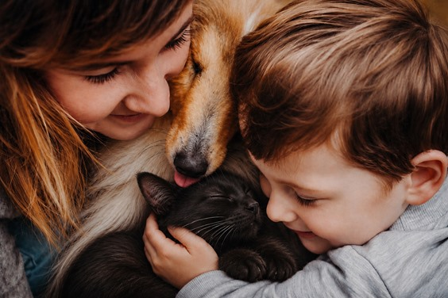

Sobre nós

Uma nova proposta de cuidado animal
Na Petly, cães e gatos são reconhecidos como membros da família. Acreditamos que os cuidados com eles merecem dedicação, respeito, atenção e carinho.
Nossa proposta combina produtos premium, atendimento acolhedor, confiança e serviços pensados para a individualidade de cada animal.
Sabemos que a rotina pode ser corrida e que nem sempre é fácil conciliar os compromissos do dia a dia. Por isso, oferecemos horários flexíveis, buscando proporcionar mais praticidade e comodidade para quem deseja oferecer o melhor cuidado ao seu pet.
Nossa filosofia
Cuidar de um pet é compreender suas necessidades e tratar o bem-estar animal como prioridade. Queremos que cada experiência seja segura, transparente e acessível para tutores e animais.
Nossos valores
- Bem-estar animal e cuidado individualizado.
- Atendimento humanizado e acolhedor.
- Atendimento inclusivo e especializado para pessoas com deficiência (PCDs), com atenção especial às necessidades de pessoas com deficiência visual, promovendo acessibilidade, autonomia e acolhimento.
- Produtos de qualidade.
- Confiança, segurança e comunicação transparente.
- Flexibilidade de horários, oferecendo praticidade e comodidade para conciliar os cuidados com os pets à rotina de seus tutores.
- Incentivo à adoção responsável.
Nosso diferencial
A Petly une a proximidade de uma loja física à praticidade de um catálogo online, onde os tutores podem conhecer uma seleção dos produtos disponíveis para compra presencial. Além de oferecer produtos de qualidade, contamos com serviços de higiene e bem-estar animal, realizados com atenção às necessidades individuais de cada pet. Nosso diferencial está no atendimento acolhedor e personalizado, na flexibilidade de horários e na construção de uma relação de confiança com os tutores, proporcionando uma experiência de cuidado pautada no respeito, na segurança e no carinho.